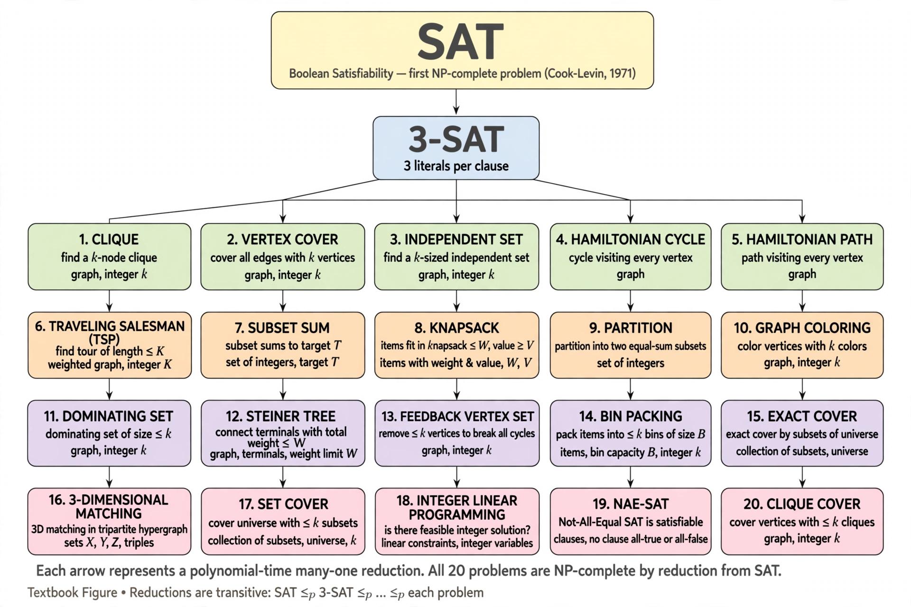

From Wikipedia, the free encyclopedia

Karp's 21 NP-complete problems are a collection of computational problems famous in complexity theory for being among the first shown to be NP-complete. The list comes from Richard M. Karp's landmark 1972 paper "Reducibility Among Combinatorial Problems", which built on Stephen Cook's 1971 proof that the Boolean satisfiability problem (SAT) is NP-complete. By giving polynomial-time reductions from known NP-complete problems to twenty further problems, Karp showed that the phenomenon of NP-completeness extended across combinatorics, graph theory, logic and scheduling — and that if any one of them admitted a polynomial-time algorithm, all of NP would.
Karp presented his results as a tree of reductions rooted at SAT. His notation, with modern names in parentheses, includes: SATISFIABILITY; 0-1 INTEGER PROGRAMMING; CLIQUE; SET PACKING; VERTEX COVER; SET COVERING; FEEDBACK NODE SET; FEEDBACK ARC SET; DIRECTED HAMILTONIAN CIRCUIT; UNDIRECTED HAMILTONIAN CIRCUIT; 3-SAT; CHROMATIC NUMBER (graph colouring); CLIQUE COVER; EXACT COVER; HITTING SET; STEINER TREE; 3-DIMENSIONAL MATCHING; KNAPSACK; JOB SEQUENCING; PARTITION; and MAX CUT.
The paper is one of the most cited in computer science. It gave researchers a standard toolkit of "hard" problems against which to test new problems, and its catalogue — spanning routing (Hamiltonian circuit), scheduling (job sequencing), resource allocation (knapsack) and network design (Steiner tree) — demonstrated that NP-completeness was not a curiosity but a property of many of the most practically important optimisation problems. Garey and Johnson's 1979 book Computers and Intractability extended Karp's list to hundreds of problems and popularised the framework. Karp received the Turing Award in 1985, in part for this work.